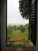
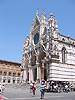
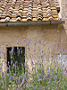

Esta es una breve crónica de mi visita a Italia. Da clic sobre las fotos minuatura para tener una vista más grande de cada fotografía. ¡Disfrúatlo!
| Imagen miniatura | Lugar | Fecha y hora aprox. de la visita | Descripción | Mapa de la ubicación |
|---|---|---|---|---|
 |
Pozzarello | Verano, 8:00 am (cielo nublado) | La casa en la que nos alojamos se llamaba Pozzarello y fue construida alrededor del año 1200 como hogar del jardinero que cuidaba los terrenos del castillo aledaño. Las gruesas paredes nos mantenían agradablemente frescos adentro, a pesar del calor abrasador del medio día. Esta es la vista desde la ventana de nuestra habitación. | |
|
El campo Toscano | Finales de verano, 12:00 pm (cielo despejado) | Esta es la escena del camino a Montalcino (¡todos los caminos conducen a Montalcino!). Se parece mucho a la escena del camino a Sienna, y al camino hacia la tienda de comestibles. Estábamos rodeados de hermosos paisajes durante la mayor parte del viaje. | |
|
Sienna | Verano, 1:00 pm | La ciudad más cercana a nuestra villa era Sienna, estaba a unos 30 minutos. Pasamos muchos días explorando las calles empinadas y torcidas, probando la cocina local en restaurantes al aire libre, y parando en la oscuridad y haciendo eco en las iglesias principales o Duomos para escapar del sol. | |
|
Postres | Verano, 4:00 pm | Presumen de una reposteria sencilla y deliciosa.Son sabores de publo que cierran cualquie comida toscana | |
 |
La gran catedral: Siena | Verano, 11:00 am (cielo despejado) | La toscana guarda grandes catedrales muy vistosas la de la Sienadestaca por su marmol blanco | |
 |
La lavanda | Inicio de verano, 5:00 pm | A inicio de verano las colinas y cerca de las casas se llena de lavanda.Caminar entre sus flores violetas,con el aroma y y el zumbido de las abejas es una de las postales muy bonitas de la region |